三位嘉宾一致认为 2027 年（尤其下半年）是 AI 资产定价的关键风险窗口，但破裂形态存在分歧：Bill Qian 认为不会是 2000 年式一次性崩盘，而是多次"深 V"式的快速重估；蒋涛 认为是 OpenAI/Anthropic 上市后 3-4 个季度内（对应 2027 下半年）财务数据暴露、维持不住增长，引发 L 型回调。共同主线：中国开源模型以 1/10 价格逼近闭源能力，是估值体系重构的最大变量。
| 嘉宾 | 判断 | 逻辑 |
|---|---|---|
| Bill Qian | 多次 Flash Bear（快速 V 型重估），无一次性大崩 | 基本面增长仍快，估值靠现金流支撑而非纯情绪 |
| 蒋涛 | 2027 下半年，L 型熊市 9-12 个月 | 巨头 IPO 后 3-4 季度财务暴露 → 增长停滞 → 骨牌效应 |
| 所长林超 | 2027 危险，尤其下半年 | 2026 中期选举后美国金融利空（美债等）重新被讨论 |
00:00-00:30 开场：中国大模型 Kimi K3 全球登顶，但只是国产开源模型抢占生态位的缩影。此前已有 GLM 5.2，接下来还有 2.4 万亿参数的千问 3.8MX、1.6 万亿参数的 DeepSeek V4 Pro、传闻 2.7 万亿参数的 MiniMax M3 Pro。这些模型可能成为 2027 年引爆 AI 泡沫的导火索。
00:53-01:35 Bill Qian 首答：预计会出现几次 Flash Bear——快速的 V 字型价格重估。因为底层增长仍快，"过两三年回头看，它可能不是一次性的纳斯达克泡沫破灭（花了十几年才回到高点），而是分小步的几次价值修复，最终是软着陆"。
01:32-02:12 蒋涛 公开预测：明年（2027）下半年。逻辑一：中国开源模型逼近美国闭源模型，分数差已经很低（画面显示黄色开源线几乎追平 Anthropic、OpenAI）。引用唐捷"我们很快就会追上"、马斯克"not so long"。
02:13-03:50 但中国的价格只有闭源的 1/10。只要 OpenAI/Anthropic 上市，财务数据就会曝光，维持不了高增长。类比微软：互联网时代股价先暴涨到顶峰，然后 Windows Server 被 Linux 全线击溃（服务器端全切 Linux）。预测 Anthropic/OpenAI 进入企业级市场后会全线溃败，收入不会再像现在这样连年暴涨 80%。（画面：Anthropic 年化 700 亿美金）
04:30-05:15 数据安全角度：美国公司不敢用"投理数据"（原文指训练数据来源问题），行业领头公司会转向开源。B 端不会用最贵的模型，小 C 端开发者发现"差不多"就不愿付高价。
05:17-06:50 价值捕获问题：AI 创造大量消费者剩余，但未必每家公司都能捕获价值。画面：价值分配四层——消费者剩余、应用、基模（模型层）、基建。当前基建是最大头（存储、算力）。
06:40-08:10 四种情景推演：① 开源崛起（应用吃更多、模型被压缩）；② 闭源通吃（可能性不大）；③ 边缘崛起（小模型、机器人、端侧、本地算力——云的价值降低）；④ 全部发生（消费者胜利最多）。真正的大崩是情景 ④：海力士这类只服务云的存储厂商受大挑战，边缘存储美光占优，若情景四发生可能是 L 型回调，资本市场 6-12 个月恢复。
08:12-09:00 蒋涛 观点总结：等巨头上市，上市初期炒到疯狂，到第三个季度到第四季度维持不住增长，就会出现很大回调。若第二个季度数据一般，公司会发利好或新模型，等到三四季度发现"客服没那么抖了"就崩。
09:00-10:12 所长林超：金融视角另一条线——2026 中期选举后，2027 年美国金融系统利空会被重新讨论（美债问题严重，特朗普无压力可能出"妖蛾子"）。Bill 坚持不会 L 型大熊，而是多次深 V；蒋涛 坚持会出现 9-12 个月 L 型熊市，因为它是骨牌效应，跌下来势头猛、恢复慢。
10:13-11:16 Bill Qian 用一分钟介绍"为什么大家觉得有泡沫"：循环资本——上游（英伟达）投资下游、下游（OpenAI/Anthropic）采购上游。但他认为这个证据"不够整齐"：这不是 WorldCom 式"你买我我买你、两家 PS 同时上升"的造假逻辑；且最下游 OpenAI/Anthropic 的 PS 倍数贵但不荒唐。
11:18-12:10 证据二"涨得太多"：今年半导体贡献标普 500 一半以上的涨幅（英伟达、博通、美光贡献最多）。但 Bill 反驳：1900 年美国 50% 农业人口，农业股占大头是合理的；先进生产力在股市里占据更多价值创造是正常现象，"涨太多"不必然是泡沫。
12:10-15:00 估值拆解（核心）：P = PE × E。海力士一年前 PE 6 倍，一年股价涨下来前瞻 PE 反而跌了——因为 E（盈利）涨得更快。举例：公司一年涨 5 倍、净利润每季度环比 +50%（海力士上年基本达到），PE 不变则股价就该涨 5 倍；若股价只涨 3 倍，就是"越涨越便宜"。结论：涨得快 ≠ 贵，必须拆开 PE 和 E 看。
14:54-16:20 画面数据（《存储和芯片，真的"贵"吗？》，2026-07-08 收盘，12 个月 forward P/E）：SK Hynix 5.68x、Samsung 4.88x、Micron 6.56x；Nvidia 20.27x；半导体行业中位数约 37x；Cisco 2000 年顶点 200x。结论：存储股估值个位数，仍被当周期股定价，远未到 Cisco 式疯狂。
16:20-17:25 费城半导体 vs 标普：视频提到标普 500 今年涨 8.69%（画面另有表述）。2025 年 2-4 月纳指已有一次 -23.9% 的回调，其后多次小回调（-7.8%、-12.8%），每次下跌有理由、回来靠科技公司业绩超预期。Bill 认为若始终是 Flash Bear，市场会回来；若中国厂商重构整个产业（基本面改变），就是另一方向了。林超补充：节奏像"一年来两次小震动，两周时间把泡沫情绪杠杆洗一遍"，世界越来越快。
17:25-18:15 AI 收入体量对照（画面：Global AI revenues ex. China）：2025 年云计算收入 1000 多亿 + 模型收入 100 多亿 ≈ 全部 1200 亿美元。占美国企业总利润（约 4 万亿）的 3%，占美国 GDP（31.8 万亿）的 0.4%，占劳动力市场（15 万亿）的 0.8%。结论：虽然增长快，但绝对体量仍小，upside 很大。今年（2026）模型公司加起来可能接近 1000 亿。
18:17-19:55 Anthropic 1 万亿估值靠什么撑？（画面：《1万亿估值，靠什么收入撑得住？》）Anthropic 年化 500 亿、今年可能 700 亿，但要用真实收入而非年化口径算。20x 市销率已属高估：英伟达不可替代（所有人的基础设施），而 Anthropic 被挑战概率极高——模型差距不高、价格被中国锚定在 1/10、企业算 ROI 不会全用最贵模型 → 2B 收入增长受限，2C 市场目前不存在。类比中国制造横扫世界：德国货好但 1/3 价格，中国货 1/3 价格能用两年，市场自然选择。
19:55-21:30 企业级市场 = 当年微软卖 PC 生产力的人群。开源带来的端侧模型（千万 30B/270B）已能在收敛场景做到大模型能力，成本低到 1% 以下。Anthropic 收入天花板：1000 亿美金是个坎，很难再往上。若模型不能保持领先，会产生崩塌式效应。画面推算：维持 20x 泡沫倍数需 ~480 亿收入；回到优质软件 10x 需 ~965 亿（≈腾讯体量）；成熟平台 5x 需 ~1930 亿（≈英伟达体量）。"长到腾讯甚至英伟达的体量 + 烧钱转盈利 + 开源面前守住毛利——三缺一，1 万亿站不住。"
21:19-22:30 反例：腾讯被低估。未来是 AI 时代，手握用户入口（微信——"没有 APP 的手机"）非常强悍，AI 对话离不开人，腾讯有价值。
21:43-22:16 中国几家模型厂商（智谱、MiniMax 等）迟早有一家会被巨头收购/占大股，因为"脚煞"（烧钱）必须靠巨头非常深的口袋支撑，现在融的钱不够打后面的战争。
22:33-23:20 判断领先幅度有限的依据：长程任务国产模型（智谱 5.2、Kimi 新版）完成度已达 90-95%。美国公司已开始转向：Cursor 已用 Kimi 做垂类模型。
23:30-25:15 仍存变数：伯克利、清华系等（画面提到的"戏主热华"）在做新研究，模型可能还有很高的天花板；世界模型等其它技术路线未爆发。但 ROI 逻辑确定：初中级选手会被替代，上限不确定——所以还有做梦空间。
25:45-28:11 债务问题（核心风险）：画面（three-nalysis 数据）：到 2029 年 AI 相关债务余额将达到约 7 万亿美元；2024-2029 累计产生 11 万亿美元债。相对：美国 GDP 30 万亿、全球 GDP 120 万亿。将成为除美国房贷外最大的债务市场。这些债需要至少 4-5% 回报，而回报最终来自下游 token 收入——"社会总福利创造了很多，但 AI 的收入并没有那么大"。
27:32-28:11 资金信号：一线龙头（谷歌、Meta）已开始融股权而非借债。借债便宜、股权贵，龙头却转股权融资 = "地主家也没有余粮了"，市场上没有那么多便宜债可借，是资金面的信号。
28:11-29:57 基本面唯一判断标准：增长能否解决所有问题（"增长能解决所有问题"——经济学的说法；"天下武功唯快不破"）。历史对比：工业化渗透花 80 年/半个世纪；PC 从 0 到 1 亿用户花 20 年；互联网 14 年；智能手机更快；AI 只花 3 年就拥有约 1000 亿美元收入。过去泡沫崩是因为增长赶不上投资；这轮如果增长够快就能解决；如果增长被中国大厂转化为"更多社会总福利"而非"财务收入"，就是另一个变数。
30:00-31:30 蒋涛 补充资金链：孙正义借了 400 亿美元投 OpenAI——OpenAI 必须上市，不上市债接不上（"跟韩国散户一样借钱炒股"）。若 OpenAI 上市而 Anthropic 不上，市场资金会集中到 OpenAI 一侧，两家竞争抢着上市。上市后 2-3 季度报表一旦停滞，"必然出现"回调；为了延续故事，会推 AF-30、世界模型等概念（林超：AF-30 还远，世界模型也还早）。
31:57-33:28 企业渗透率与白领替代成本占比仍低，AI 厂商只要不断 push。开源在下面抄底：开源把消费者教育全做完了（索尼电视被中国品牌取代的类比）——你很高贵，但我们不断逼近你、最后把你逼到无路可走。企业开始问"我怎么省钱"。
33:28-34:30 中国算力现状：训练算力目前够用，推理算力不够。中国能搞到的算力足以支撑模型追赶；禁运越来越严、卡越来越难拿，但华为 950 卡春节期间卖光一年产能。coding 场景不需要最强 GPU + HBM4，靠集群、算法优化、工程实践、低能源价格即可。
34:39-36:00 价值迁移（画面：《价值迁移：模型层流出，调度层流入》）：模型层 = 整车里的一个部件（电机），OpenAI/Anthropic/DeepSeek/Kimi 正在"变成自来水：1/100 价格量产"，价值流出 ▼；调度层/基础设施层 = 整车厂 + 充电网（Snowflake、Okta、ServiceNow、安全、云），"Agent 离不开的基建在大涨"，价值流入 ▲；算力层 = 卖铲子的人（英伟达），"挖金子的还在烧钱，卖铲子的先赚翻了"，唯一已兑现。
35:03-36:00 调度是真正的价值：千万 27B 模型打 SWE-bench 榜只得 20 分，用 Agent 调度后可达 60-70 分，用千亿模型再调度可到 80 多分。成本 1/100，调度层努力可达 70 分——调度接近"完成任务"的层，是真正价值。模型厂商也意识到这点，开始自己做工具和调度：Anthropic 做了 Claude Code，后面可调度 Sonnet 和 Opus 处理不同任务；又推 Claude Work、Claude Tag（团队协同）。
36:34-38:16 两个前沿：① 模型继续向上的天花板；② Agentic Software Engineering（Agent 软件工程）方法论——过去方法论围绕人和传统研发流程（敏捷等），现在要研究新方法论。优势不一定在模型厂商，而在更懂企业协同工具、方法论、交付这条线的公司——会出来很多"整机厂商"（Snowflake 等），它们离用户更近、完整交付能力更强。真正最大的收入来自 2B（微软互联网/移动互联网两败，但最终靠 Office 和买来的公司渗透 B 端做到万亿）。"下一个决战在 B 端市场，整机交付。"最后：AI 公司都在贴钱给用户（订阅即亏损），"这是一个拿奖学金学习的时代，抓住红利，赶紧壮大自己。"
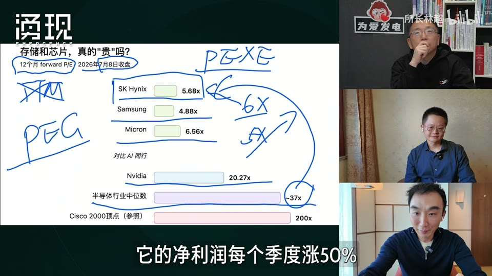
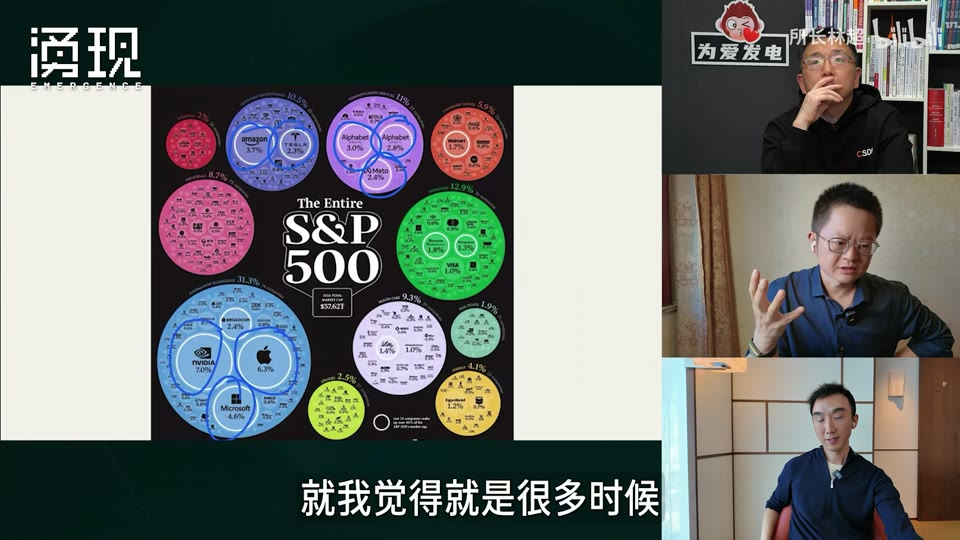
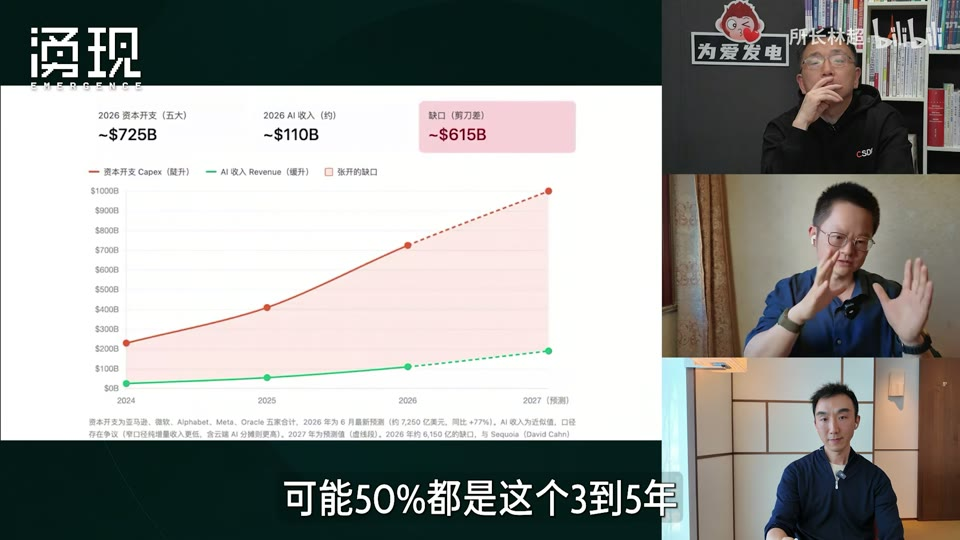
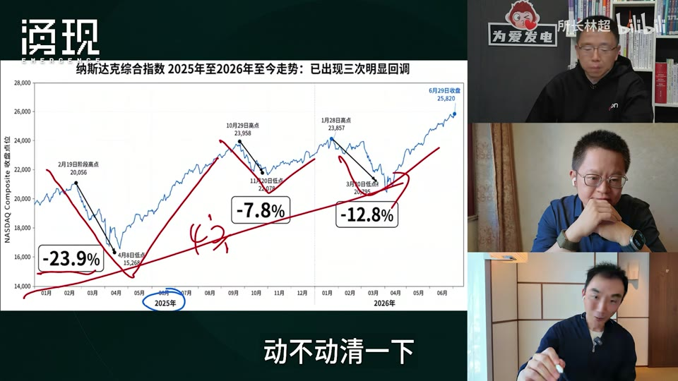
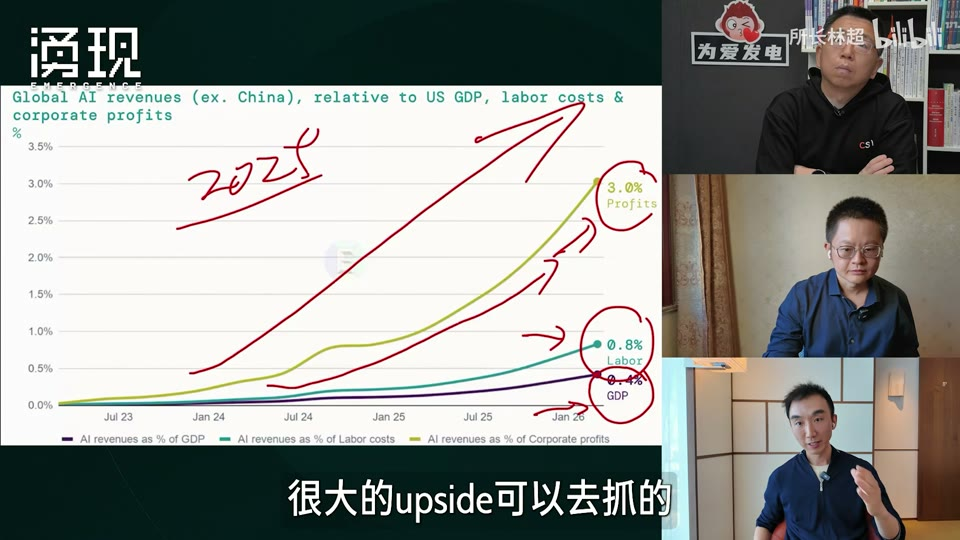
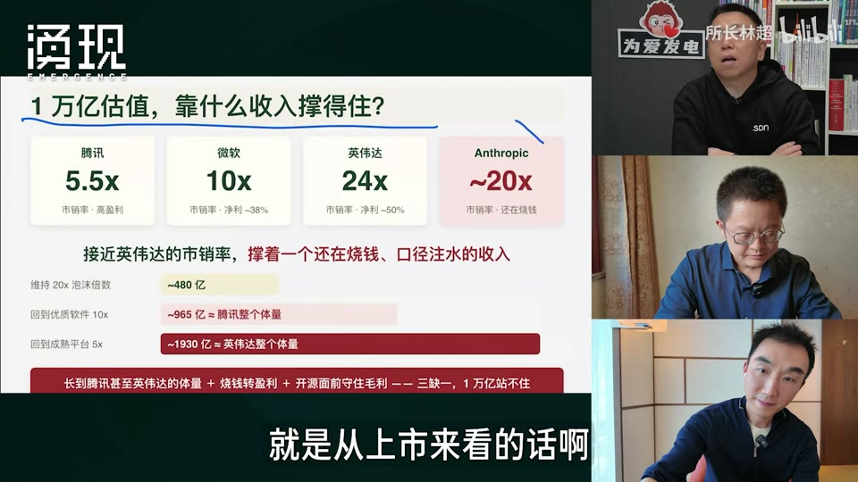
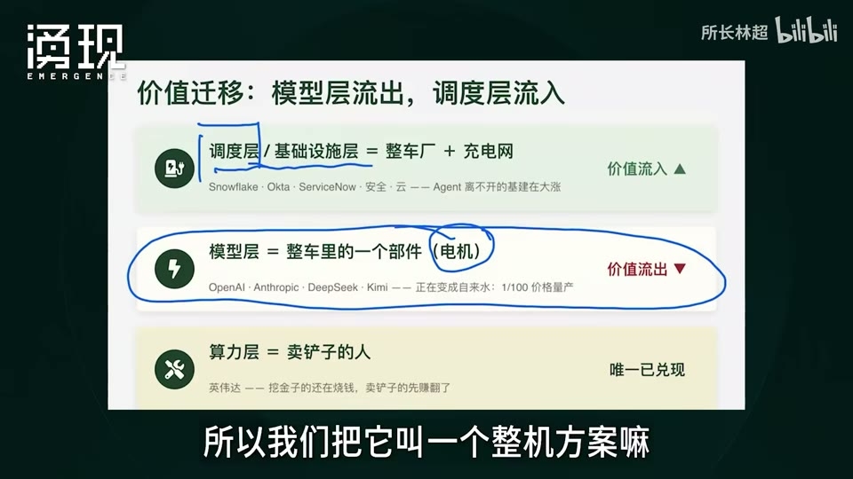
以下数据通过同花顺 iFinD 查询验证（as_of 2026-08-03），与视频陈述对照：
| 数据点 | 视频陈述 | iFinD 实际 | 状态 |
|---|---|---|---|
| SK Hynix 远期 PE | 5.68x | 画面确认 5.68x（TTM 因亏损为负） | 一致 |
| Samsung 远期 PE | 4.8x | 画面确认 4.88x | 一致 |
| Micron 远期 PE | 16.5x（口述）/ 6.56x（画面） | TTM -4.8（亏损），画面 6.56x 为远期 | 口述与画面口径不同 |
| Nvidia PE | 20.27x（画面 forward） | TTM 30.4x | 口径差异已注明 |
| 博通 PE | — | TTM 63.2x，收入增速 38.7% | 补充 |
| AMD PE | — | TTM 155x，收入增速 37.8% | 补充 |
| 台积电 PE | — | TTM 29.9x，收入增速 35.6% | 补充 |
| 甲骨文 PE | — | TTM 22.0x，收入增速 17.3% | 补充 |
| 腾讯 PE | "被低估"（市销率 5.5x） | TTM PE 16.3x，收入增速 9.1% | 低估值确认 |
| 标普 500 市值 | 画面 $37.62T | —（Yahoo/Stooq 均被限流） | 待复核 |
注：视频画面表格（2026-07-08）使用 12 个月 forward P/E；iFinD 返回 TTM PE。存储股（Hynix/Micron）周期底部盈利波动大，TTM 与 forward 差异属正常。视频中"Micron 16.5"为口述、画面显示 6.56x，已标注存疑。
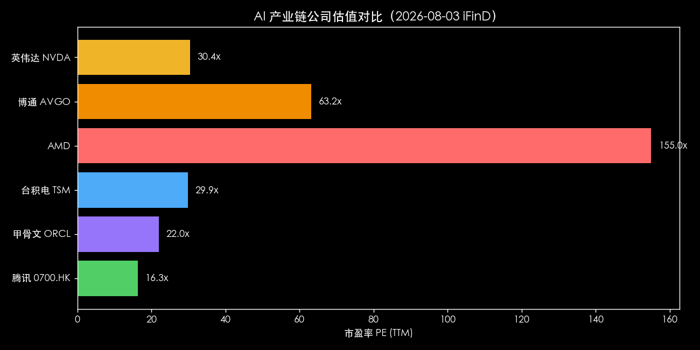
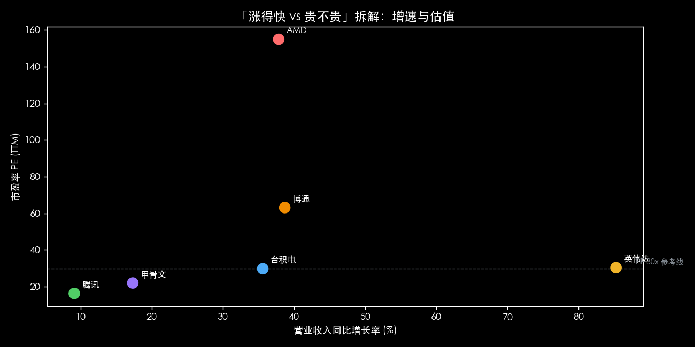
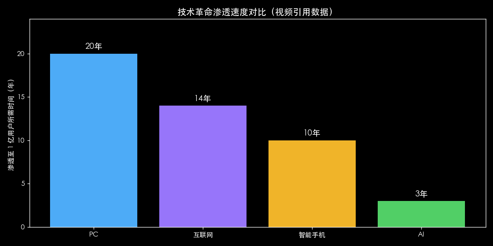
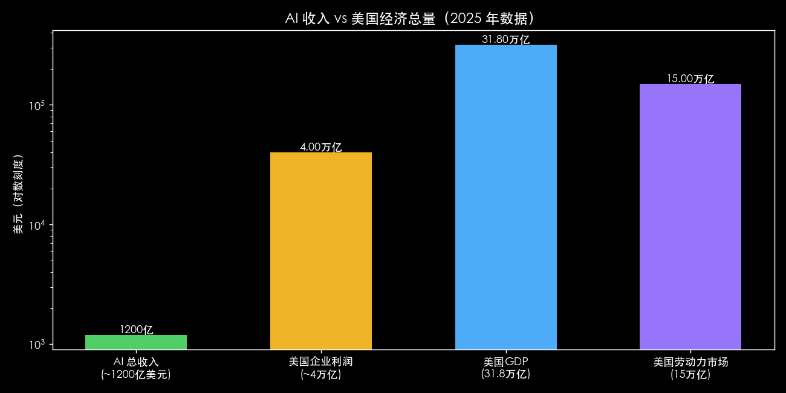
| 维度 | 指标 | 信号 |
|---|---|---|
| 巨头 IPO | OpenAI/Anthropic 上市时间、定价、上市后 2-4 季度财报 | 上市后营收增速与毛利率是否维持 |
| 开源追赶 | 中国开源模型（Kimi/GLM/千问/DeepSeek）与闭源 benchmark 差距 | 差距是否收窄至 <5% |
| 定价 | API token 价格（闭源 vs 开源） | 开源是否维持 1/10 价差并侵蚀闭源份额 |
| 债务 | AI 相关公司债发行量、利率、2029 到期分布 | 发行放缓/利率上行 = 资金面收紧信号 |
| 资本开支 | 五大科技公司 Capex vs AI 收入剪刀差 | 剪刀差扩大但收入不跟 = 风险积累 |
| 存储周期 | Hynix/Micron 盈利环比、forward PE | 存储涨价周期见顶信号 |
| 资金信号 | 龙头是否转向股权融资、巴菲特/孙正义等大额注资动作 | 股权融资增加 = "地主家没余粮" |
| 企业采用 | Cursor 等工具是否扩大国产模型采用、企业 ROI 调研 | B 端迁移速度 |
以上均为观察变量，非交易建议。数据来源：视频陈述 + iFinD 验证 + 公开报道。
《AI泡沫，2027年爆破？》深度梳理 · 生成于 2026-08-03 · 原始素材：B站 BV1NKge6YEyj（播放 11.7 万）
方法：yt-dlp 下载 → faster-whisper 转写 → ffmpeg 截帧 → Kimi k3 多模态帧分析 → iFinD 数据验证 → 本报告